Facultad de Ingeniería de Sistemas Computacionales
Lic. en Desarrollo y Gestión de Software
Tópicos Especiales II
Laboratorio 2 — Desarrollo asistido por chat web
1GS241
Presentado por:
Ríos, Gerald (8-987-741)
Revisado por:
Profesor Regis Rivera
Fecha de entrega
29 / 10 / 2026
Índice
Introducción3
1. Entorno y contexto de trabajo3
2. Registro de solicitudes al chat web4
3. Verificación local14
3.1 Pruebas automáticas antes y después14
3.2 Ejecución manual14
3.3 Diff multiarchivo16
4. Sugerencias modificadas y rechazadas18
5. Preguntas de reflexión20
Conclusiones21
Introducción
Este laboratorio consistió en construir un gestor de tareas de consola en Python 3 conversando con un asistente en una página web de chat, sin autocompletado ni chat dentro del editor. El flujo fue siempre el mismo: pedir el archivo completo, leerlo, pasarlo a los archivos locales, ejecutarlo y volver al chat cuando algo no cuadraba. Usamos Claude en claude.ai con el modelo Sonnet 5.5.
El informe recoge nueve solicitudes al chat con su captura, la verificación local de cada versión (pruebas automáticas antes y después, ejecución manual y diff), las sugerencias que modificamos o rechazamos con su razón, y las respuestas a las preguntas de reflexión. No hicimos el reto opcional de persistencia en JSON.
1. Entorno y contexto de trabajo
El código quedó en la carpeta laboratorio_chat_web con tres archivos: app.py (menú), tareas.py (lógica) y test_tareas.py (pruebas con unittest). Todo se ejecutó con Python 3 desde la terminal, sin librerías externas. La conversación se abrió desde cero con el prompt sugerido de la guía para fijar el contexto antes de pedir código, y no pegamos contraseñas, claves ni datos personales en ningún mensaje.
El chat no toca el proyecto: devuelve el código y nosotros lo transferimos. Para cada respuesta copiamos el texto del archivo a su versión local, lo comparamos con la anterior cuando había una y lo corrimos antes de darlo por bueno. Las versiones intermedias se conservaron en la carpeta versiones del paquete entregado.
Hubo un tropiezo práctico a mitad del laboratorio: la cuenta del chat llegó al límite de uso justo después de la sexta solicitud y la séptima quedó detenida con el aviso de límite. Retomamos la misma conversación cuando se renovó el cupo, por eso el registro sigue una sola conversación continua.
2. Registro de solicitudes al chat web
La Tabla 1 resume las nueve solicitudes. Debajo va cada una con su prompt, lo que respondió el chat y la captura de la conversación.
Tabla 1. Solicitudes al chat y cambio que produjo cada una
N.°
Paso de la guía
Cambio que produjo
1
4. Contexto
Ninguno en el código; el chat confirmó el marco y esperó el requisito.
2
5. Primera funcionalidad
app.py versión 1: menú, agregar, listar y salir, con lista en memoria.
3
6. Lectura antes de copiar
Ninguno; explicación de cada función y del flujo.
4
9. Cambio de requisito
app.py versión 2: tareas como diccionarios con prioridad y función pedir_prioridad() con bucle.
5
12. Depuración
try/except EOFError en el punto de entrada del programa.
6
14. Refactor y pruebas
Lógica en tareas.py, menú en app.py y cinco pruebas en test_tareas.py.
7
16. Completar desde el menú
Opción 3 del menú, opcion_completar y marcas [ ] / [X] al listar.
8
17. Revisión final
Catorce hallazgos; ningún cambio de código directo (ver sección 4).
9
17. Aplicar lo elegido
KeyboardInterrupt capturado, try/except alrededor de agregar_tarea y dos pruebas nuevas.
Solicitud 1: contexto de trabajo
Prompt (el sugerido por la guía):
Estoy realizando un laboratorio de desarrollo de software con IA mediante chat web. Crearé una aplicación de consola en Python 3 para gestionar tareas. No uses librerías externas. Quiero avanzar por etapas y yo ejecutaré todo localmente. No generes todavía el proyecto completo; espera mi siguiente requisito
El chat respondió que trabajaría por etapas, solo con la biblioteca estándar, y preguntó por la versión de Python, la estructura de archivos y si habría persistencia. No contestamos esas preguntas porque no cambiaban el requisito inmediato.
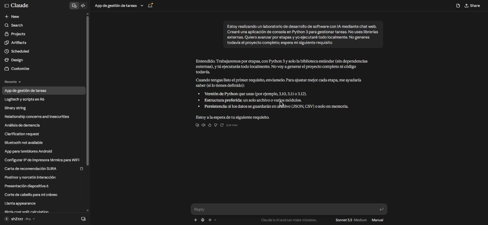
Figura 1. Solicitud 1: contexto de trabajo y respuesta del chat.
Solicitud 2: primera versión
Prompt (el sugerido por la guía):
Genera una primera versión de app.py. Debe permitir: 1) agregar una tarea con un título, 2) listar las tareas existentes y 3) salir. Usa una lista en memoria y un menú de consola. Devuelve el archivo completo. No agregues persistencia ni prioridades todavía.
Devolvió un app.py con mostrar_menu, agregar_tarea, listar_tareas y main. Lo copiamos y probamos agregar dos tareas, listar, escribir una opción inválida y salir; todo coincidió con el requisito.
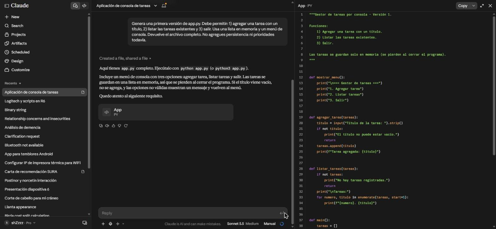
Figura 2. Solicitud 2: primera versión de app.py (panel derecho).
Solicitud 3: explicación antes de seguir
Prompt (el sugerido por la guía):
Explícame brevemente qué hace cada función y cuál es el flujo principal. No cambies el código todavía.
El chat describió las cuatro funciones y el ciclo while True con su break en la opción 3. Con eso confirmamos la condición de salida y que la lista tareas se pasa como argumento, sin variables globales.
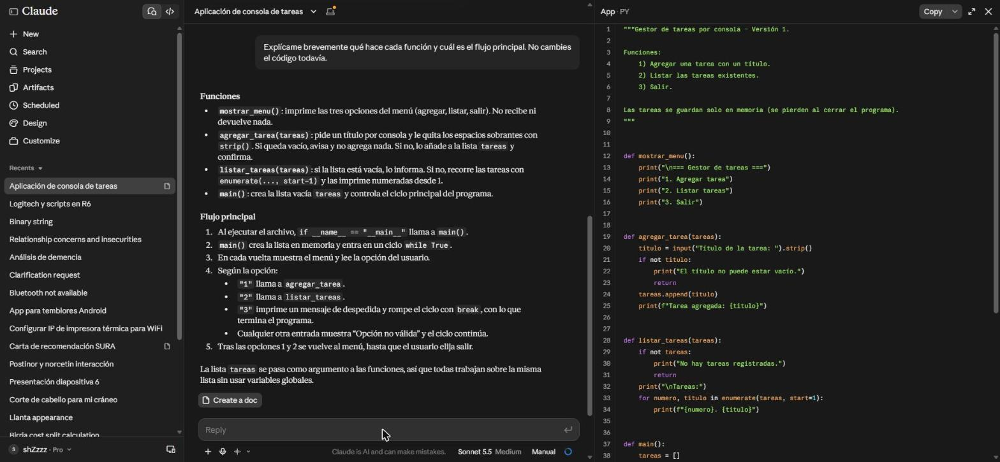
Figura 3. Solicitud 3: explicación de funciones y flujo.
Solicitud 4: prioridad por tarea
Prompt (el sugerido por la guía):
Cambia la aplicación para que cada tarea tenga título y prioridad: baja, media o alta. Si el usuario escribe otra prioridad, debe mostrarse un mensaje y volver a pedirla. Mantén las funciones de agregar, listar y salir. Devuelve app.py completo.
La respuesta trajo una estructura nueva, el diccionario {"titulo": ..., "prioridad": ...} en lugar de un texto suelto, y una validación nueva, pedir_prioridad(), que repite la pregunta hasta recibir baja, media o alta. Antes de reemplazar el archivo comparamos las dos versiones con git diff --no-index y probamos los tres casos de la guía, incluido "Leer" con prioridad "urgente", que mostró el mensaje y volvió a preguntar.
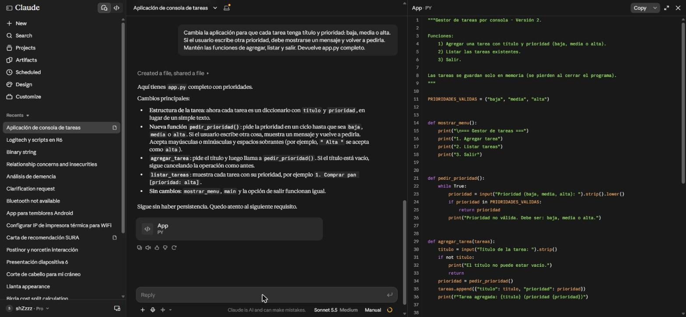
Figura 4. Solicitud 4: versión 2 con prioridades.
Solicitud 5: depuración de un error real
En las pruebas de la versión 2 nos encontramos con un error real: al escribir el título "Leer" y pulsar Ctrl+Z y Enter en la pregunta de prioridad (Windows), o al cerrar la entrada estándar, el programa terminaba con un traceback EOFError: EOF when reading a line. Lo reprodujimos con la entrada 1, Leer y fin de archivo. Usamos la plantilla de la guía con el mensaje, los pasos y el fragmento de pedir_prioridad:
Al ejecutar mi aplicación obtengo este problema: el programa termina con un traceback "EOFError: EOF when reading a line" en la línea de input() de pedir_prioridad. Ocurre cuando hago: opción 1, escribo el título "Leer" y en la pregunta de prioridad presiono Ctrl+Z y Enter en Windows (o cierro la entrada estándar). Este es el fragmento relacionado: def pedir_prioridad(): while True: prioridad = input("Prioridad (baja, media, alta): ").strip().lower(); if prioridad in PRIORIDADES_VALIDAS: return prioridad; print("Prioridad no válida. Debe ser: baja, media o alta."). Identifica la causa, explica por qué ocurre y propón la corrección más pequeña posible.
El chat explicó que input() lanza EOFError cuando no hay más entrada, que nadie la captura y que cualquier otro input() del programa fallaría igual. Propuso un try/except EOFError de cuatro líneas alrededor de main(), y advirtió que capturarla dentro del while de pedir_prioridad causaría un bucle infinito. La explicación tenía sentido, así que la aplicamos y repetimos exactamente el mismo caso: ya no hubo traceback (Figuras 15 y 16).
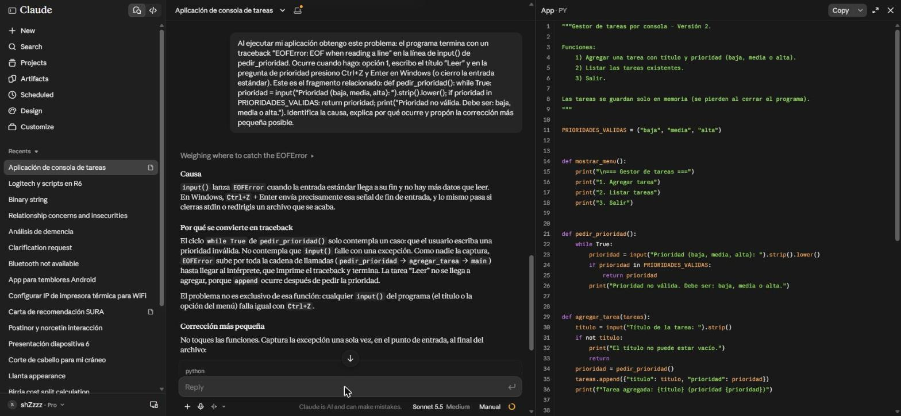
Figura 5. Solicitud 5: prompt y diagnóstico de la causa.
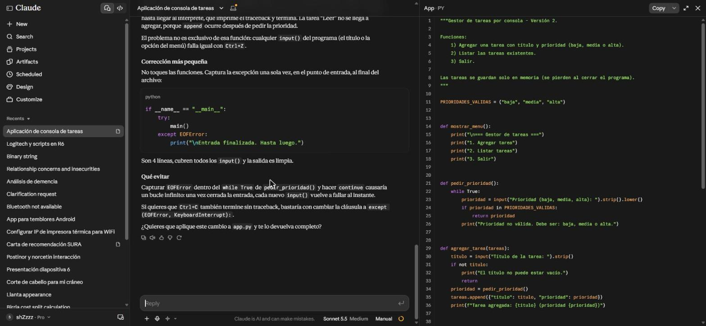
Figura 6. Solicitud 5: corrección propuesta y qué evitar.
Solicitud 6: separar la lógica y crear pruebas
Prompt (el sugerido por la guía, precedido de una línea que cuenta que aplicamos la corrección anterior):
Aplico ese cambio tal cual y probé de nuevo el mismo caso: ya no sale el traceback. Ahora refactoriza la solución para que la lógica de tareas quede en tareas.py y el menú permanezca en app.py. Después crea test_tareas.py usando unittest. Incluye pruebas para agregar una tarea válida, rechazar una prioridad inválida y marcar una tarea como completada. No uses librerías externas. Devuelve los tres archivos completos por separado.
Devolvió tres archivos. tareas.py con normalizar_prioridad, agregar_tarea y completar_tarea, que lanzan ValueError y no usan input() ni print(); app.py solo con el menú, importando tareas as logica y con funciones renombradas (opcion_agregar, opcion_listar) para que no choquen con el módulo; y test_tareas.py con cinco pruebas. Se pasó de lo pedido en dos cosas: agregó completar_tarea y el campo completada, y dos pruebas extra (título vacío y completar una tarea inexistente). Lo discutimos en la sección 4.
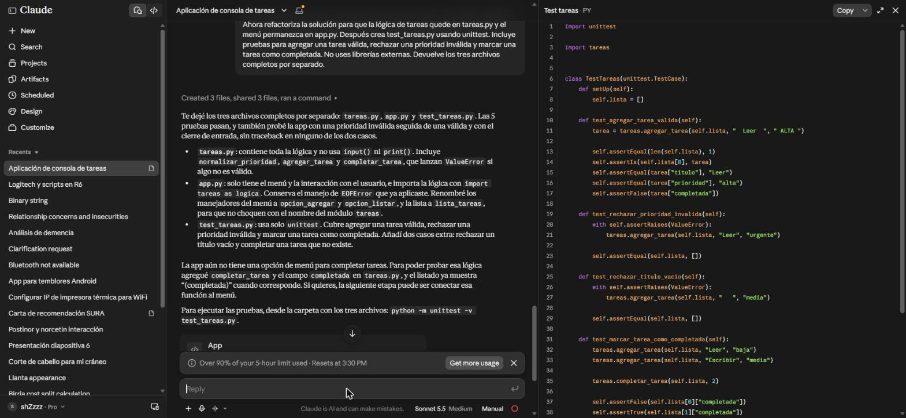
Figura 7. Solicitud 6: refactor en tres archivos y pruebas.
Solicitud 7: completar tareas desde el menú
Prompt (el sugerido por la guía, precedido de una línea con el resultado de las pruebas):
Corrí las 5 pruebas con python -m unittest -v y pasan. Agrega la posibilidad de marcar una tarea como completada desde el menú. Al listar, muestra [ ] para pendiente y [X] para completada. Mantén las funciones y pruebas existentes. Indica qué archivos cambian y devuelve solo los archivos que deban modificarse completos.
Esta solicitud se quedó detenida por el límite de uso de la cuenta y la reenviamos al renovarse el cupo. El chat cambió solo app.py: nueva opción 3 "Completar tarea" (Salir pasó a la 4), función opcion_completar que muestra la lista y valida que el dato sea un número, y el listado con [ ] y [X]. También cambió por su cuenta [prioridad: alta] por (prioridad: alta) para que los corchetes de la prioridad no se confundan con los del estado; lo aceptamos porque la razón es válida y el cambio es de una línea, pero lo anotamos porque no lo habíamos pedido.
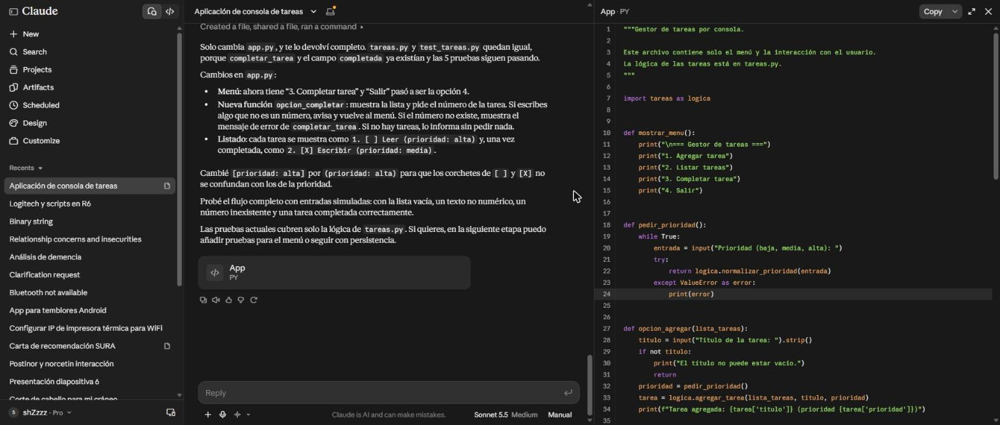
Figura 8. Solicitud 7: respuesta con los cambios en app.py.
Solicitud 8: revisión final
Prompt (el sugerido por la guía, con una línea inicial y la aclaración de qué archivos revisar):
Apliqué ese app.py y corrí las 5 pruebas, que pasan. Revisa estos archivos (app.py, tareas.py y test_tareas.py tal como quedaron en esta conversación) buscando errores lógicos, validaciones faltantes, duplicación y problemas de legibilidad. No reescribas todo. Enumera los hallazgos por prioridad y explica cada recomendación.
El chat enumeró catorce hallazgos en cuatro grupos: dos de prioridad alta (validación de tipos en tareas.py), cuatro de prioridad media (validación duplicada, prioridades repetidas, completar una tarea ya completada, Ctrl+C), cuatro de legibilidad y cuatro de pruebas. Aclaró que ninguno de los de prioridad alta se puede disparar desde el menú. No aplicamos nada de inmediato: decidimos hallazgo por hallazgo (sección 4).
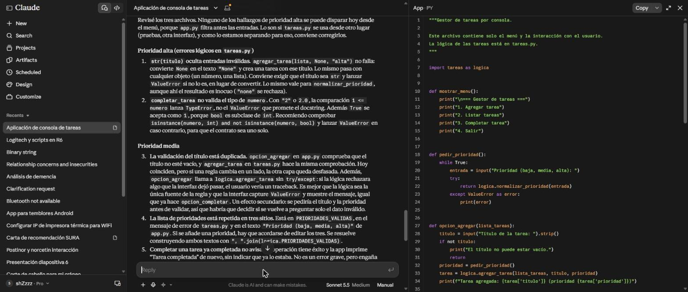
Figura 9. Solicitud 8: hallazgos de prioridad alta y media.
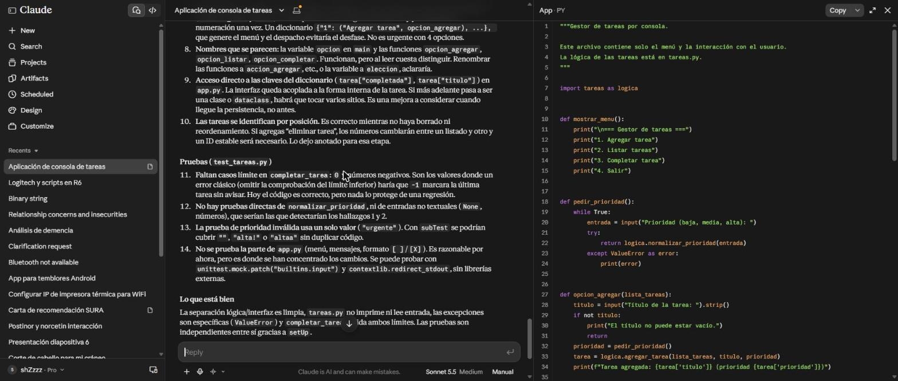
Figura 10. Solicitud 8: hallazgos de legibilidad y de pruebas.
Solicitud 9: aplicar solo lo elegido
Con la lista de hallazgos delante, ajustamos la solicitud para que el chat tocara únicamente lo que habíamos decidido:
Gracias por la revisión. No voy a aplicar los hallazgos 1 y 2 (validar tipos con isinstance): el menú solo pasa str e int, y no quiero sobreingeniería. Tampoco 4, 5, 7, 8, 9, 10, 12, 13 ni 14. Aplica solo estos tres cambios, sin tocar nada más: (a) hallazgo 6, que Ctrl+C también termine sin traceback; (b) hallazgo 11, agrega pruebas de completar_tarea con 0 y con un número negativo; (c) hallazgo 3 solo en parte: deja la comprobación de título vacío en app.py tal como está, para no pedir la prioridad de una tarea sin título, pero envuelve la llamada a logica.agregar_tarea en un try/except ValueError que muestre el mensaje. Indica qué archivos cambian y devuelve solo esos archivos completos.
Devolvió app.py y test_tareas.py y dijo no haber tocado nada más. Lo comprobamos: el texto de app.py devuelto coincide con la versión anterior más esos tres cambios, y nada más. tareas.py no se modificó.
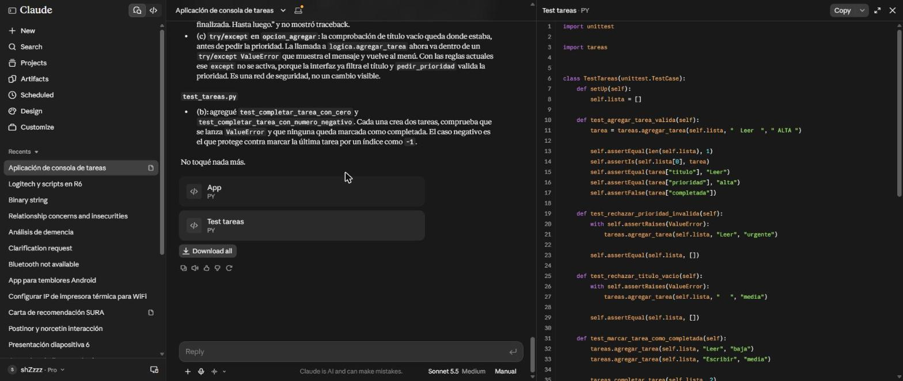
Figura 11. Solicitud 9: cambios aplicados y archivos devueltos.
3. Verificación local
3.1 Pruebas automáticas antes y después
La primera suite existió desde la solicitud 6, así que el "antes" es el estado tras el refactor, con cinco pruebas. El "después" es el estado final, con siete: las dos nuevas son test_completar_tarea_con_cero y test_completar_tarea_con_numero_negativo. Ninguna prueba se modificó ni se debilitó para que pasara.
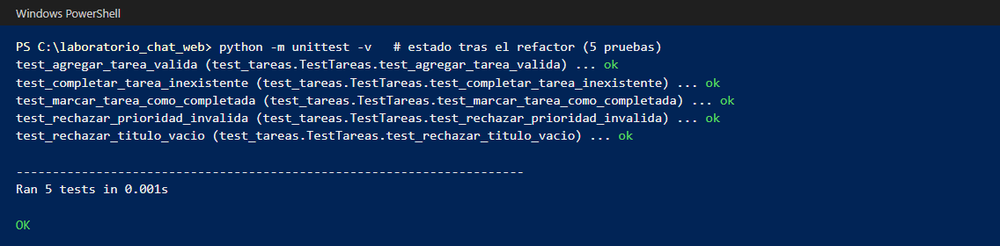
Figura 12. Salida de python -m unittest -v tras el refactor: cinco pruebas.
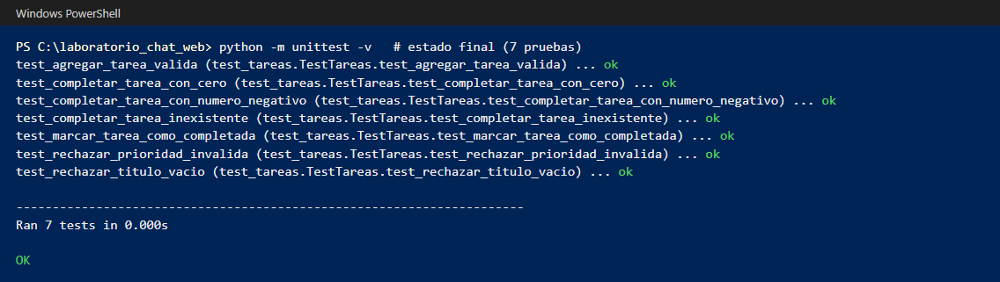
Figura 13. Salida de python -m unittest -v en el estado final: siete pruebas.
3.2 Ejecución manual
Corrimos la aplicación final con los casos de la guía: "Estudiar Python" con prioridad alta, "Preparar demo" con media y "Leer" con la prioridad inválida "urgente". El programa mostró el mensaje, volvió a pedir la prioridad y aceptó "baja". Después completamos la tarea 2 y el listado mostró [X] solo en esa. En las pruebas manuales también probamos un texto no numérico y un número fuera de rango al completar, que mostraron su mensaje sin cerrar el programa.
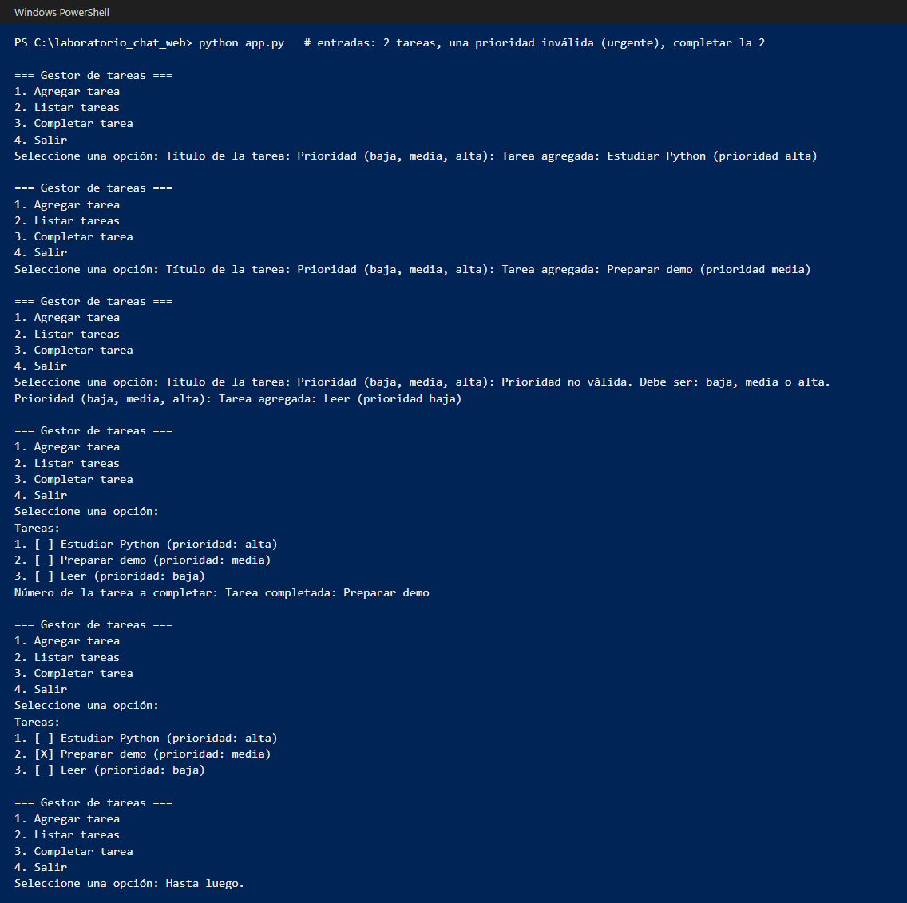
Figura 14. Ejecución de app.py con el caso inválido y la tarea completada.
Sobre el error de la solicitud 5, repetimos la misma entrada (título "Leer" y fin de entrada en la prioridad) antes y después de la corrección:
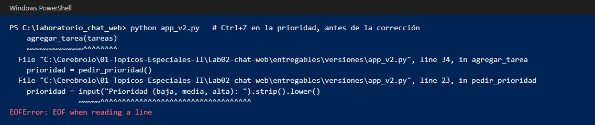
Figura 15. El caso que falló, antes de la corrección: traceback con EOFError.
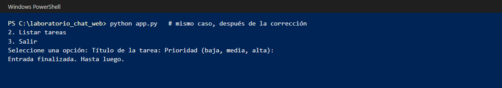
Figura 16. El mismo caso después de la corrección: el programa termina limpio.
Para Ctrl+C no podíamos mandar la señal por una tubería de entrada, así que lo simulamos haciendo que input() lanzara KeyboardInterrupt dentro de un script de prueba; el programa terminó con el mensaje de cierre y sin traceback. Es una simulación y no una pulsación real del teclado.
3.3 Diff multiarchivo
Para el diff tomamos como "antes" el estado previo al refactor (un solo app.py con la corrección de EOFError) y como "después" la carpeta final. El diff afecta tres archivos: app.py modificado, y tareas.py y test_tareas.py nuevos. El archivo completo (244 líneas) va en el paquete como diff_multiarchivo.txt; la figura muestra el comienzo.
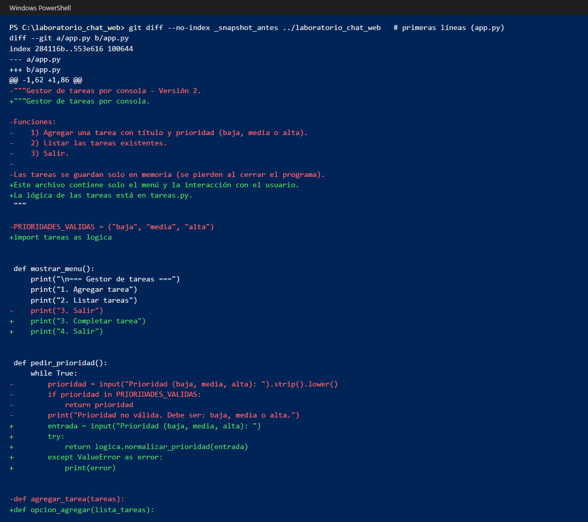
Figura 17. Comienzo del diff multiarchivo entre el estado previo al refactor y el final.
4. Sugerencias modificadas y rechazadas
La revisión de la solicitud 8 fue donde más tuvimos que decidir. La guía pide tratar la respuesta como sugerencias y no aplicar lo que no podamos justificar. La Tabla 2 resume la decisión sobre cada hallazgo.
Tabla 2. Decisión sobre los hallazgos de la revisión
Hallazgos
Decisión
Razón
1, 2
Rechazados
Validar con isinstance que el título sea str y el número sea int protege contra llamadas que el programa nunca hace. El menú ya entrega texto y un entero.
3
Modificado
Aplicado solo en parte. Explicado abajo.
4, 5
Rechazados por ahora
Repetir la lista de prioridades en tres sitios y avisar si una tarea ya estaba completada son mejoras razonables, pero no corrigen un fallo y cada una toca varias líneas y mensajes de salida.
6
Aceptado
Ctrl+C no estaba capturado y terminaría con traceback. Es el mismo problema de la solicitud 5 y el arreglo es una sola cláusula.
7 a 10
Rechazados
Un diccionario para el menú, renombrar funciones, desacoplar las claves del diccionario y los identificadores estables son cambios para cuando el programa crezca (persistencia, borrar tareas). Con cuatro opciones solo agregarían estructura.
11
Aceptado
Probar 0 y un número negativo protege el límite inferior de completar_tarea, que es donde un índice como -1 marcaría la última tarea sin avisar.
12, 13, 14
Rechazados
Las pruebas de tipos dependen de los hallazgos 1 y 2, que rechazamos; subTest y las pruebas del menú con mock aumentan la complejidad de la suite para este alcance.
Sugerencia modificada: validación del título (hallazgo 3)
El chat señaló que el título vacío se valida dos veces, en app.py y en tareas.py, y que opcion_agregar llama a la lógica sin try/except. Su recomendación era dejar la regla solo en la lógica y que la interfaz capturara ValueError. Lo dijo él mismo: eso obligaría a pedir el título y la prioridad antes de validar, y habría que decidir si se vuelve a preguntar solo el dato inválido.
No estuvimos de acuerdo con la primera mitad. Quitar la comprobación de la interfaz significa que alguien que deja el título en blanco igual tendría que contestar la prioridad de una tarea que se va a descartar, y eso empeora la experiencia sin ganar nada. Conservamos la comprobación en app.py como filtro de usuario y adoptamos solo la segunda mitad: la llamada a logica.agregar_tarea quedó dentro de un try/except ValueError que muestra el mensaje y regresa al menú. La duplicación sigue existiendo, y la asumimos: la lógica protege su propia regla y la interfaz evita preguntas inútiles. Con las reglas actuales ese except no se activa; es una red de seguridad, algo que el propio chat reconoció al devolver el código.
Sugerencia rechazada: validar tipos (hallazgos 1 y 2)
El chat propuso exigir que el título sea str y que el número sea int y no bool, porque agregar_tarea(lista, None, "alta") crearía una tarea llamada "None" y completar_tarea(lista, "2") lanzaría TypeError en lugar de ValueError. Es cierto en ambos casos, pero los dos caminos de entrada del programa lo impiden: el título viene de input() y el número pasa por int() en opcion_completar. El propio chat reconoció que ninguno se puede disparar desde el menú. Añadir isinstance en tareas.py, y más pruebas para cubrirlo (hallazgo 12), nos habría dado código que no necesitamos y que habría que explicar sin que sirva para el programa actual. Lo rechazamos y lo dejamos anotado como algo a retomar si otra interfaz llamara a la lógica.
Lo que el chat hizo sin que lo pidiéramos
En la solicitud 6 pedimos tres archivos y tres pruebas. Recibimos además completar_tarea, el campo completada y dos pruebas más (título vacío y tarea inexistente). La guía manda rechazar los cambios que la IA haga en archivos que no debía tocar; aquí los tres archivos eran los pedidos y el código extra era la lógica que la prueba de "marcar completada" necesitaba para existir. Revisamos las dos pruebas extra, comprobamos que prueban comportamiento real y las conservamos. También usamos completar_tarea después, en la solicitud 7. Lo anotamos igual, porque el chat amplió el alcance por su cuenta y solo lo mencionó en el texto de la respuesta.
5. Preguntas de reflexión
1. ¿En qué momento del laboratorio la IA aportó más valor y por qué?
En la depuración de la solicitud 5. Con el mensaje de error, los pasos y el fragmento, el chat identificó la causa, explicó por qué afectaba a todos los input() y propuso el arreglo más pequeño, además de advertir sobre la corrección tentadora que habría producido un bucle infinito.
2. ¿Qué diferencia práctica observaste entre usar chat web y usar autocompletar dentro del editor?
El autocompletar sugiere sobre la marcha, línea a línea, dentro del archivo que ya tenemos abierto. El chat obliga a hacer el recorrido completo: explicar el contexto, pedir el archivo, copiarlo, ejecutarlo y volver con el resultado. Esto es más lento, pero deja una conversación donde se ve qué pedimos y qué cambió, y fuerza a leer todo el archivo antes de pegarlo. Como contrapartida, el chat solo conoce lo que le contamos: en la revisión tuvimos que indicarle que se refería a los archivos tal como habían quedado en la conversación.
3. ¿Por qué copiar código desde un chat no elimina la necesidad de ejecutar pruebas?
Porque el chat puede equivocarse o dejar casos sin cubrir y no lo sabe. El error de EOFError estaba en código que el chat generó y que a simple vista parecía correcto, y solo apareció al ejecutar con una entrada que cierra la terminal. Además, el chat afirmó haber corrido las pruebas en su propio entorno; eso no sustituye correrlas en el nuestro.
4. ¿Qué información fue útil incluir al reportar un error al chat?
El mensaje exacto del error, los pasos para reproducirlo (opción, título y qué se pulsó) y el fragmento de código donde ocurría. No hizo falta pegar el programa completo. Con eso el chat contestó con la causa concreta en lugar de una lista de posibilidades.
5. ¿Qué riesgo existe al pegar datos confidenciales o código privado en un servicio web?
El texto sale de nuestro equipo y queda en un servicio de un tercero, con sus propias políticas de retención y de uso. Un token, una contraseña o código de un cliente pegado en el chat deja de estar bajo nuestro control. En este laboratorio el código era propio y sin datos sensibles, y los mensajes de error que enviamos no incluían rutas ni credenciales. En una empresa hay reglas adicionales sobre qué se puede compartir con un servicio externo, y habría que respetarlas antes de pegar nada.
6. ¿Qué parte del resultado final puedes explicar sin consultar nuevamente a la IA?
El flujo del menú y su condición de salida, la separación entre app.py (entrada y salida) y tareas.py (reglas), por qué normalizar_prioridad y agregar_tarea lanzan ValueError y la interfaz las captura, y qué verifica cada una de las siete pruebas. También el motivo por el que el except EOFError va al final del programa y no dentro de pedir_prioridad.
Conclusiones
Terminamos con un gestor de tareas funcional en tres archivos y siete pruebas que pasan, construido a lo largo de nueve solicitudes al chat. Cada versión se ejecutó antes de aceptarla, y el error de EOFError fue lo que de verdad nos obligó a volver al chat con un problema concreto.
Lo que más trabajo costó fue decidir qué no aplicar. La revisión final trajo catorce hallazgos razonables y casi todos eran mejoras para un programa más grande que este; aplicamos dos, modificamos uno y rechazamos el resto con su razón. También quedó claro que el chat amplía el alcance si no se le delimita, y la solicitud 9 funcionó mejor porque indicamos qué hallazgos sí y cuáles no. Hubo un contratiempo ajeno al código: el límite de uso de la cuenta detuvo la solicitud 7 hasta que se renovó. No hicimos el reto opcional de persistencia en JSON, y las pruebas del menú siguen sin existir; la suite cubre solo la lógica de tareas.py.